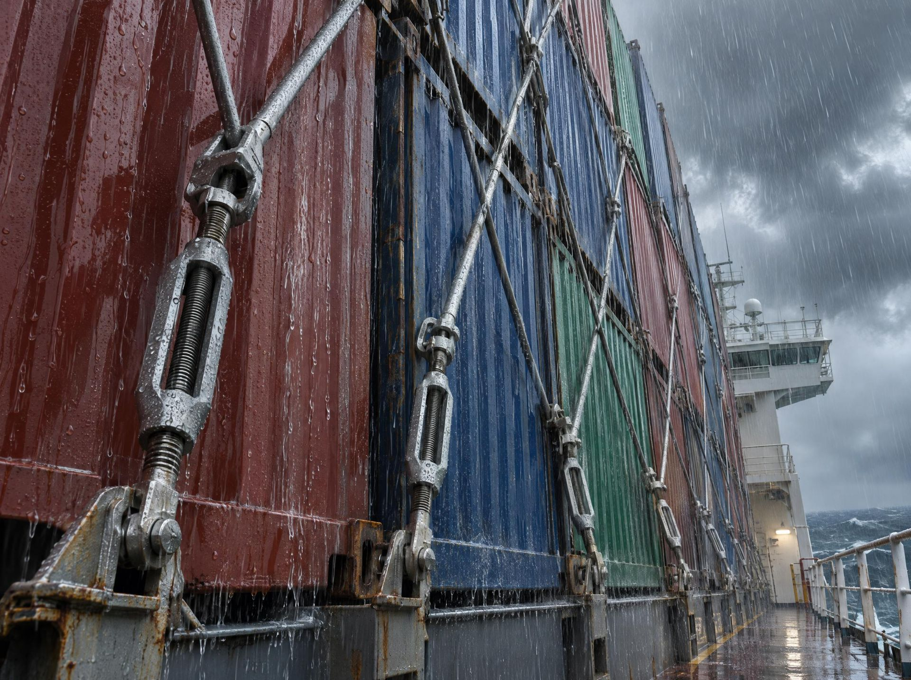
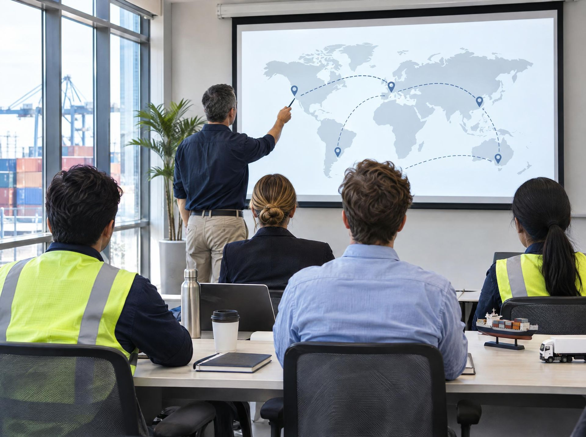
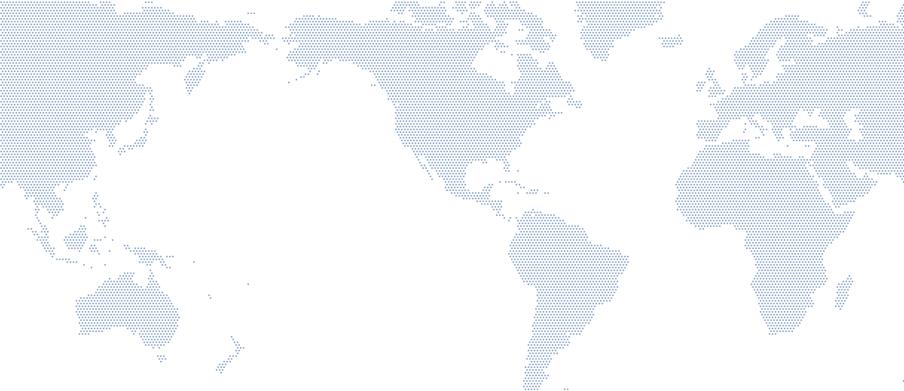

Marítimo
Despacho por Manzanillo, Lázaro Cárdenas y Veracruz con patente, y por Altamira con corresponsalía.
Ver agencia aduanalDespacho aduanal marítimo, terrestre y aéreo en los principales puertos y aeropuertos de México, con más de 20 años en comercio exterior.
O llama a un asesor: +52 55 2587 2033Operamos con el respaldo de las patentes aduanales 1626, 3503, 1740 y 3807.
Marítimo, terrestre y aéreo, con más de 20 años en comercio exterior.
Despachamos en los principales puertos y aeropuertos de México, con patentes nacionales y una amplia red de corresponsalías.
Con patente en Manzanillo, Lázaro Cárdenas y Veracruz, y corresponsalía en Altamira.
Regulaciones, tratados y estrategias para reducir costos en tus importaciones y exportaciones.

Revisamos tus procesos aduanales para detectar mejoras y prevenir riesgos fiscales o administrativos.

Pólizas contra robo, daño o pérdida durante el transporte y el almacenamiento.
Programas IMMEX, ALTEX, ECEX y Draw Back, permisos, NOM y padrones.

Clasificación arancelaria, cumplimiento, tratados y programas de fomento para tu equipo.
Además: bodega propia del lado americano, hasta 30 días sin cargo de almacenaje adicional, transporte propio y precios competitivos en transportación nacional e internacional.
Despacho por Manzanillo, Lázaro Cárdenas y Veracruz con patente, y por Altamira con corresponsalía.
Ver agencia aduanalCruces por Nuevo Laredo y Colombia, N.L., con bodega propia del lado americano y transporte propio.
Ver agencia aduanalDespacho de carga con patente en el Aeropuerto Internacional de la Ciudad de México.
Ver agencia aduanalPartimos de factura comercial, lista de empaque y documentos de origen. Confirmamos qué aplica según tu producto.
Definimos fracción arancelaria, permisos y tratados antes de que la carga llegue.
Nuestra red de corresponsalías opera en el punto de cruce que tu ruta necesite.
Si toca reconocimiento, acompañamos la revisión. Si es verde, la carga sigue.
Transporte de confianza hasta tu almacén o el de tu cliente.
Nos dedicamos a la importación y exportación, con asesoría de personal especializado que trabaja junto con tu empresa.
Importaciones y exportaciones con China, Asia, Europa, Estados Unidos, Sudamérica y más de 30 países, despachadas desde las principales aduanas del país.

Indica tu operación, tu carga y tus datos para que un asesor pueda revisar tu caso.
Solicitar una cotizaciónDepende del tipo de mercancía y de las regulaciones aplicables. Trabajamos para minimizar los tiempos de espera.
Generalmente factura comercial, lista de empaque y documentos de origen. Pueden variar según el producto.
Permisos sanitarios, ambientales y comerciales, además de programas como ALTEX, IMMEX, ECEX y Draw Back.